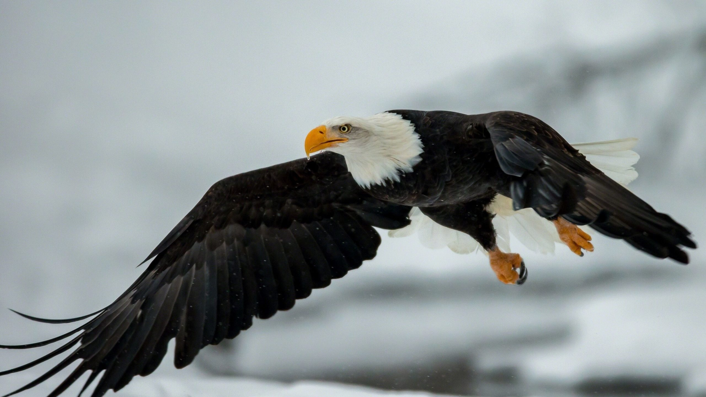
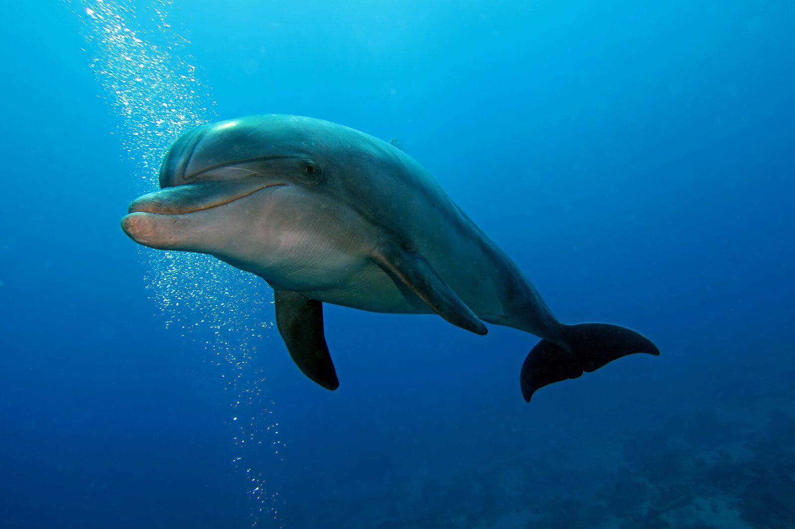

WILD NATURE

Terrestrial Animals
Terrestrial animals are animals that live predominantly or entirely on land (e.g. cats, dogs, ants, spiders), as compared with aquatic animals, which live predominantly or entirely in the water (e.g. fish, lobsters, octopuses), and amphibians, which rely on a combination of aquatic and terrestrial habitats (e.g. frogs and newts). Some groups of insects are terrestrial, such as ants, butterflies, earwigs, cockroaches, grasshoppers and many others, while other groups are partially aquatic, such as mosquitoes and dragonflies, which pass their larval stages in water. Terrestrial animals tend to be more developed and intelligent than aquatic animals.
TIGERS

Gliding Animals
A number of animals are capable of aerial locomotion, either by powered flight or by gliding. Flight has evolved at least four times in separate animals: insects, pterosaurs, birds, and bats. Gliding has evolved on many more occasions. Usually the development is to aid canopy animals in getting from tree to tree, although there are other possibilities. Gliding, in particular, has evolved among rainforest animals, especially in the rainforests in Asia (most especially Borneo) where the trees are tall and widely spaced. Several species of aquatic animals, and a few amphibians and reptiles have also evolved this gliding flight ability, typically as a means of evading predators.
EAGLES
Aquatic Animals
An aquatic animal is any animal, whether vertebrate or invertebrate, that lives in water for all or most of its lifetime. Many insects such as mosquitoes, mayflies, dragonflies and caddisflies have aquatic larvae, with winged adults. Aquatic animals may breathe air or extract oxygen from water through specialised organs called gills, or directly through the skin. Natural environments and the animals that live in them can be categorized as aquatic (water) or terrestrial (land). This designation is polyphyletic.
DOLPHINS
Animal Friends
Animals are multicellular, eukaryotic organisms in the biological kingdom Animalia. With few exceptions, animals consume organic material, breathe oxygen, are able to move, can reproduce sexually, and go through an ontogenetic stage in which their body consists of a hollow sphere of cells, the blastula, during embryonic development. Over 1.5 million living animal species have been described—of which around 1 million are insects—but it has been estimated there are over 7 million animal species in total. Animals range in length from 8.5 micrometres (0.00033 in) to 33.6 metres (110 ft). They have complex interactions with each other and their environments, forming intricate food webs. The scientific study of animals is known as zoology.
WILD NATURE